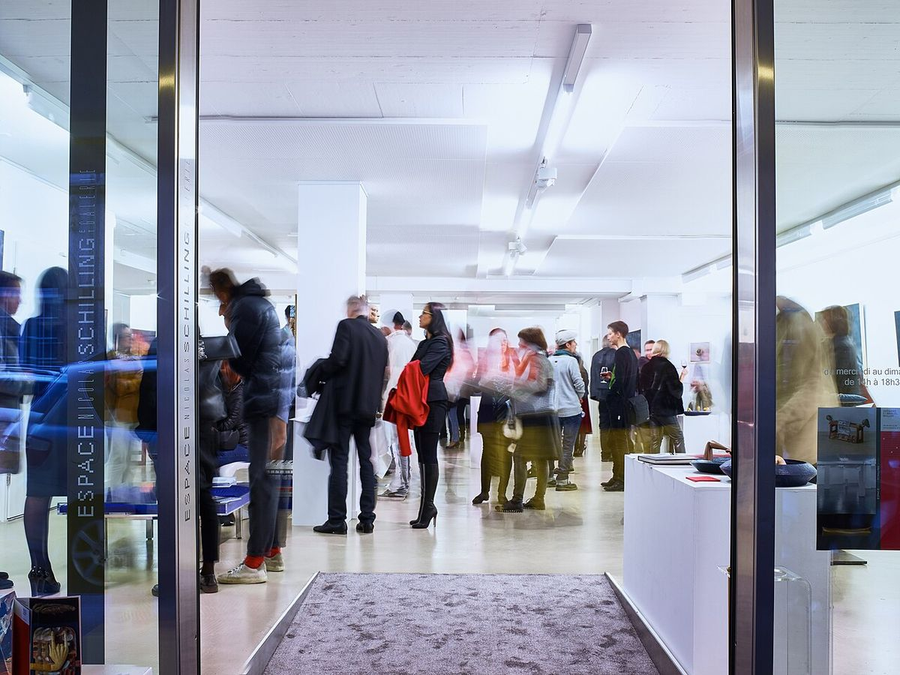
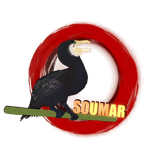
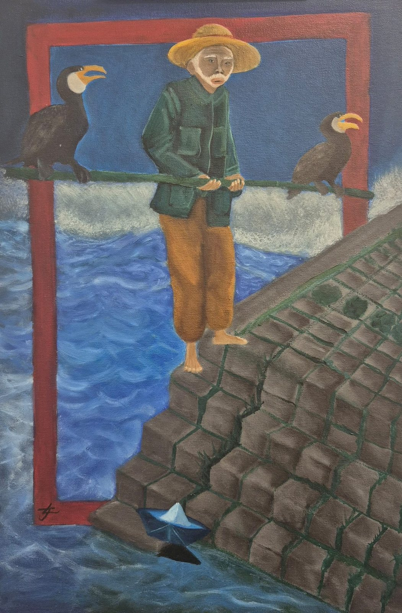
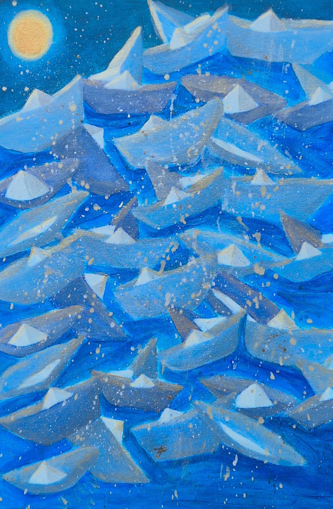
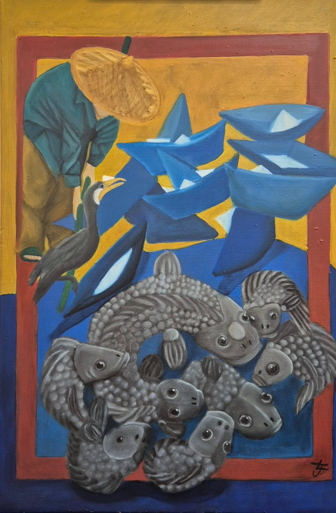
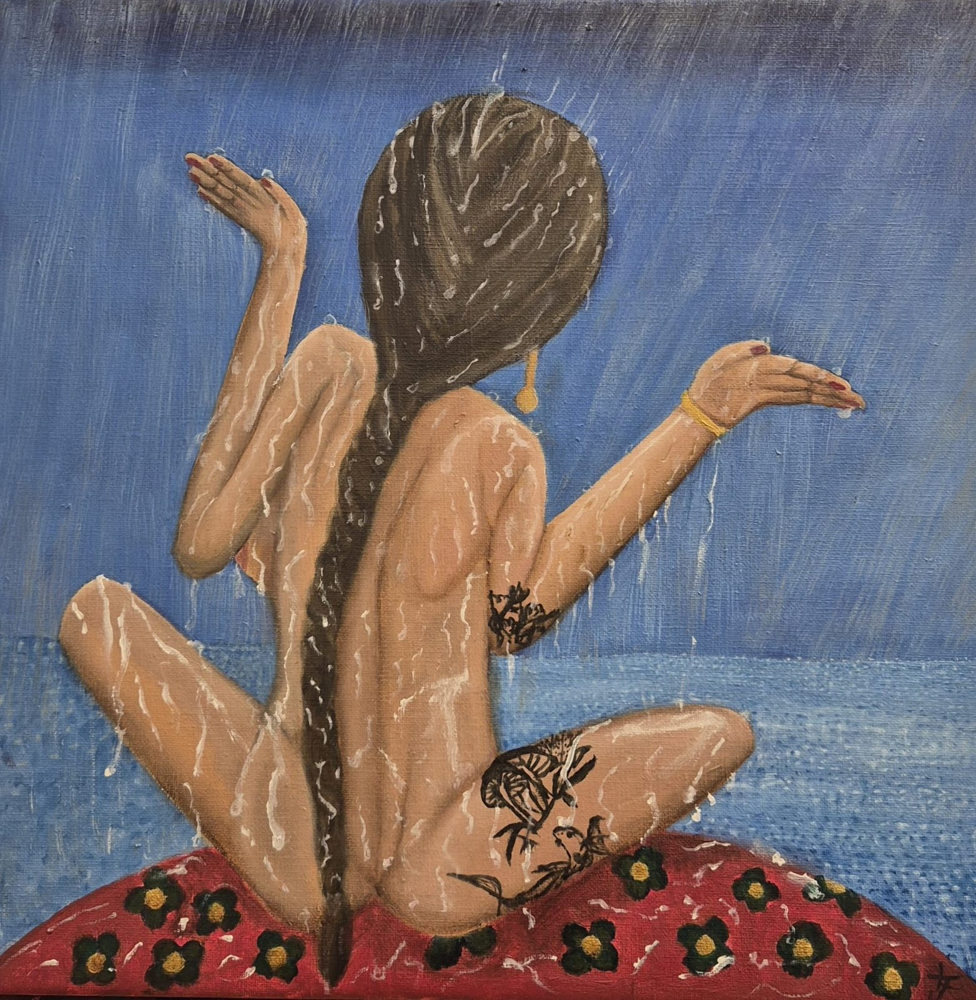
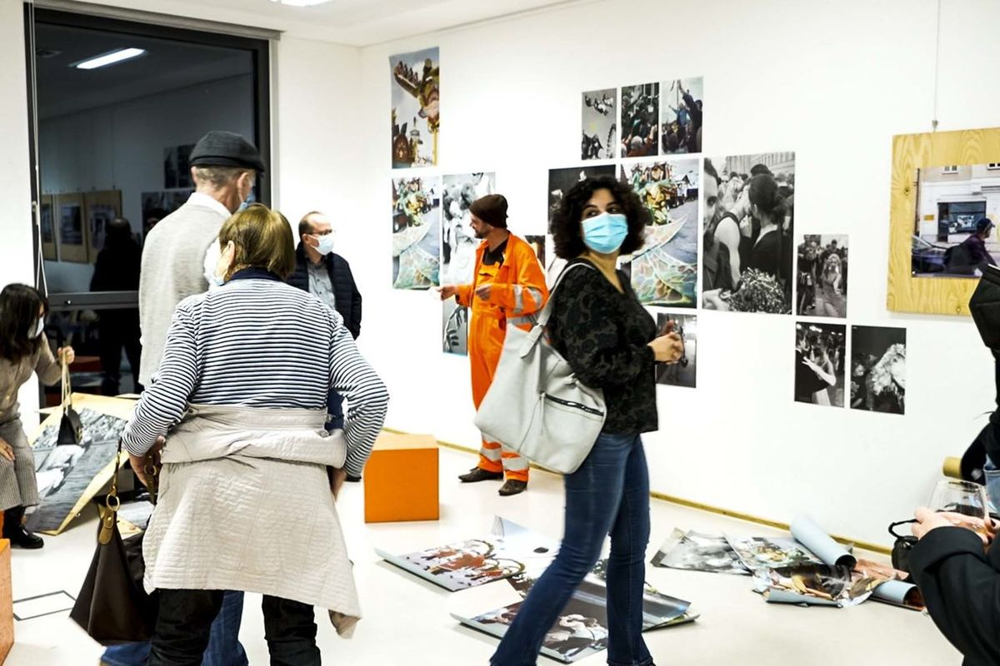
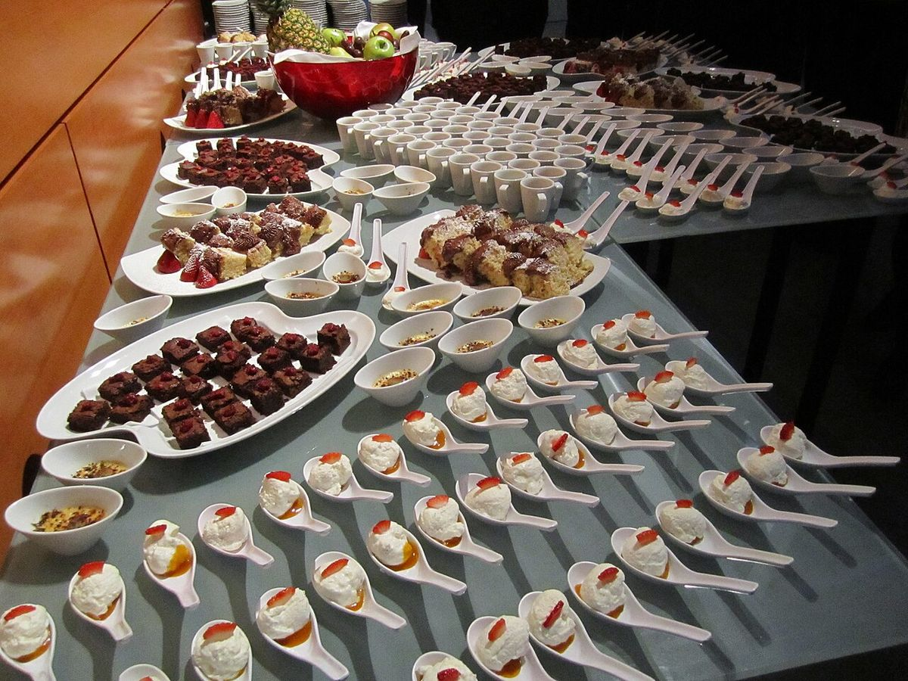

Le pêcheur et les bateaux de papier
Galerie à confirmer, Paris

Soumar

L'artiste
Soumar est une artiste peintre qui travaille par séries : un même personnage, un même univers, raconté de toile en toile. Pêcheurs, cormorans, bateaux de papier… ses tableaux se répondent comme les pages d'un récit.
Elle peint à l'huile et à l'acrylique, avec des couleurs franches, des cadres dans le cadre et une attention particulière aux textures. Chaque œuvre est une pièce unique, réalisée à la main dans son atelier.
Galerie
Série · 3 toiles
Un vieux pêcheur, ses cormorans et une flottille de bateaux de papier : trois toiles qui se lisent comme une histoire.
Faites glisser pour voir la suite →

Œuvre
Une femme assise face à la mer, offerte à la pluie.

Agenda

Galerie à confirmer, Paris

Lieu à confirmer

Atelier de l'artiste
Contact
Pour acquérir un tableau, passer une commande ou proposer une exposition :
Écrire à Soumar